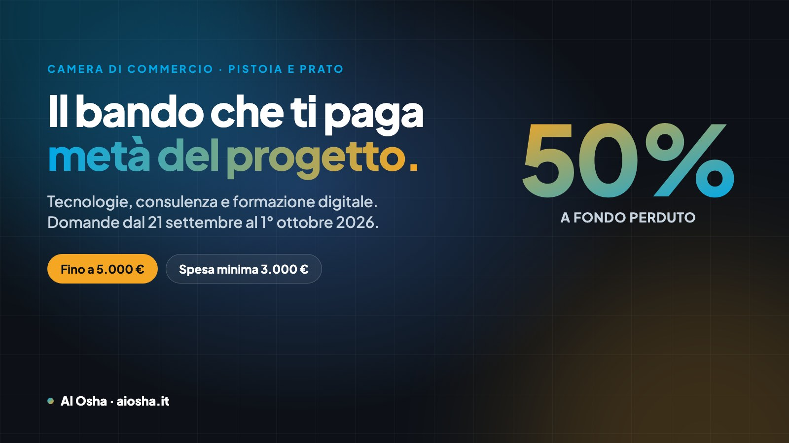

Il bando che ti paga metà del progetto digitale (Pistoia e Prato, 2026)
La Camera di Commercio rimborsa il 50% delle spese, fino a 5.000 euro, per tecnologie, consulenza e formazione. L'intelligenza artificiale è nell'elenco. Ecco chi può chiedere il contributo, cosa ci puoi mettere dentro e come si invia la domanda senza sbagliare.

⏳ Le date che contano. Le domande si inviano per PEC dalle ore 18:00 di lunedì 21 settembre 2026 alle ore 23:59 di giovedì 1° ottobre 2026. Chi invia prima delle 18:00 è escluso. I fondi si assegnano in ordine di arrivo: la dotazione è di 490.170 euro, cioè circa cento contributi pieni.
In sintesi
La Camera di Commercio di Pistoia-Prato rimborsa il 50% delle spese, fino a 5.000 euro, alle micro, piccole e medie imprese con sede legale in provincia di Pistoia o Prato che investono in tecnologie digitali, consulenza o formazione sul digitale e sul green. Spesa minima 3.000 euro. Valgono anche le spese già fatte dal 1° gennaio 2026. L'intelligenza artificiale è citata per nome fra le tecnologie ammesse; i siti web e la SEO no, sono esclusi. Si fa domanda per PEC, con firma digitale, dal 21 settembre al 1° ottobre.
Questo è il momento dell'anno in cui un progetto digitale costa la metà. Non è un prestito, non è un credito d'imposta da recuperare in dieci anni: è un contributo a fondo perduto, cioè soldi che arrivano sul conto dell'impresa a lavoro finito e rendicontato.
Il testo ufficiale è chiaro ma è scritto come sono scritti i bandi: quattordici pagine di articoli e rimandi. Qui c'è la stessa cosa in italiano, con il numero dell'articolo fra parentesi così puoi controllare tutto. Dove il bando non dice una cosa, qui non c'è.
Cosa paga il bando, in numeri
| Voce | Valore |
|---|---|
| Percentuale rimborsata | 50% delle spese ammesse |
| Contributo massimo | 5.000 euro |
| Spesa minima del progetto | 3.000 euro (quindi almeno 1.500 euro di contributo) |
| Premialità | +250 euro con rating di legalità o certificazione della parità di genere (UNI/PdR 125) |
| Ritenuta | 4% sul contributo: su 5.000 euro ne arrivano 4.800 |
| Dotazione complessiva | 490.170 euro |
| Tipo di aiuto | Fondo perduto, in regime de minimis |
Sopra i 10.000 euro di progetto il contributo non cresce più: resta 5.000. Un progetto da 3.000 euro porta 1.500 euro, uno da 6.000 ne porta 3.000 (art. 9, 10, 11).
Chi può chiedere il contributo
I requisiti dell'art. 4 devono esserci tutti al momento della domanda, e vanno mantenuti fino al pagamento. Ne manca uno e la domanda non è ammessa. Nella pratica, quattro fanno da filtro vero:
- Sede legale a Pistoia o a Prato Non basta un'unità locale o un cantiere in provincia: serve la sede legale nella circoscrizione della Camera.
- Impresa attiva e iscritta al Registro delle Imprese Chi è iscritto solo al REA resta fuori, e restano fuori i professionisti non iscritti al Registro. Le dimensioni invece non sono un problema: basta essere micro, piccola o media impresa, cioè quasi tutte.
- Diritto annuale pagato e DURC regolare Sono le due cose che il commercialista o il consulente del lavoro ti dicono in cinque minuti. Se la Camera trova un'irregolarità concede dieci giorni lavorativi per sistemarla, ma è tempo che in una procedura a sportello non vuoi perdere.
- Polizza contro le catastrofi naturali È l'obbligo introdotto dalla legge 213/2023, ed è il requisito che manca a più imprese. Controllalo per primo: senza polizza non si partecipa.
Una sola domanda per impresa, solo in forma singola: niente progetti congiunti (art. 5).
Cosa ci puoi mettere dentro (e cosa no)
Il progetto deve valere almeno 3.000 euro e può essere già concluso, in corso o ancora da iniziare (art. 7). Le tre strade sono queste.
Tecnologie (art. 8, comma 1)
L'elenco è lungo e comprende l'intelligenza artificiale scritta per nome, insieme a cloud, cyber security, robotica, big data e analytics, IoT e sensoristica, blockchain, realtà aumentata e virtuale, stampa 3D, sistemi di gestione dei processi aziendali (ERP, MES, PLM, gestionali, codici a barre), CRM, geolocalizzazione, e sistemi digitali per l'energia e la sostenibilità. L'e-commerce è ammesso solo se collegato a un'altra tecnologia dell'elenco.
Consulenza (art. 8, comma 2)
Analisi del profilo digitale dell'impresa, piani di sviluppo digitale, implementazione delle tecnologie dell'elenco, sistemi di gestione dell'innovazione e della sicurezza delle informazioni, innovation manager temporaneo, consulenza ESG. Tradotto: il lavoro di chi entra in azienda, guarda come si lavora e mette in piedi gli strumenti.
Formazione (art. 8, comma 3)
Formazione su competenze digitali o green collegate a quelle tecnologie, rivolta a chi lavora stabilmente nell'impresa: titolare compreso, dipendenti e collaboratori stabili.
Cosa è escluso (art. 8, comma 4)
Qui si perdono le domande, quindi leggilo due volte. Sono fuori: i siti web aziendali, il web advertising, la SEO e la SEM, la consulenza fiscale, contabile e legale, la pura promozione commerciale o pubblicitaria, il supporto per adeguarsi a obblighi di legge, il vitto, l'alloggio e il trasporto, e l'hardware di base (PC, notebook, tablet, smartphone, centralini, stampanti non 3D) se non è strettamente collegato a una tecnologia ammessa.
Attenzione alle fatture miste: mettere "sito web e formazione" sulla stessa riga è il modo più rapido per far scartare l'intera voce. Meglio documenti separati, con le singole voci di costo leggibili una per una.
Chi può fare il lavoro: la regola sui fornitori
Per l'acquisto di tecnologie il fornitore può essere chiunque. Per consulenza e formazione, invece, l'art. 6 restringe il campo: Competence Center, EDIH, centri di trasferimento tecnologico, incubatori certificati, FabLab, start-up e PMI innovative, enti di formazione accreditati o certificati ISO 9001 EA37, EGE certificati, innovation manager certificati UNI 11814 o iscritti nell'elenco Unioncamere.
Poi c'è la lettera h), ed è la porta che usano quasi tutti i professionisti seri del territorio: può essere fornitore anche «qualsiasi altro soggetto con partita IVA che negli ultimi tre anni abbia realizzato almeno tre attività, per tre clienti diversi, di consulenza o formazione sulle tecnologie del bando». In questo caso il fornitore firma un'autodichiarazione sul modulo della Camera, che l'impresa allega alla domanda.
Due vincoli che saltano spesso: il fornitore non può essere socio o amministratore dell'impresa (né una società dove siedono i suoi soci), e non può essere a sua volta beneficiario dello stesso bando.
Per trasparenza: io rientro nella lettera h) e fornisco l'autodichiarazione già compilata a chi lavora con me. Non è un merito, è un requisito — ma è la prima cosa che ti servirà chiedere a chiunque ti proponga consulenza o formazione con questo bando.
Le date, e perché l'orario conta più della scadenza
| Quando | Cosa succede |
|---|---|
| Lunedì 21 settembre 2026, ore 18:00 | Apertura. Prima di quest'ora le domande sono nulle |
| Giovedì 1° ottobre 2026, ore 23:59 | Chiusura |
| Entro 90 giorni dalla domanda | Provvedimento di concessione via PEC, con il codice CUP |
| Entro 120 giorni dalla concessione | Progetto concluso e rendicontazione inviata, altrimenti si perde tutto |
| Entro 30 o 60 giorni dalla rendicontazione | Liquidazione (30 giorni per i progetti già conclusi) |
| Fino al 31 marzo 2027 | Le domande in lista d'attesa possono ancora essere finanziate se si liberano fondi |
È una procedura a sportello: le domande si finanziano in ordine cronologico di arrivo della PEC, e fa fede la data e l'ora del file daticert.xml che il gestore allega in automatico (art. 13). Con una dotazione da circa cento contributi pieni, "entro il 1° ottobre" è un'illusione ottica: la domanda va preparata prima e inviata il 21 alle 18:00.
Come si invia la domanda, in quattro passi
- Compili la domanda online Sulla procedura del sito ptpo.camcom.it, che genera un file in formato PDF/A.
- La firmi digitalmente Il titolare o il legale rappresentante, con firma digitale PAdES. La firma a mano scansionata non vale.
- La mandi per PEC A cciaa@pec.ptpo.camcom.it, con l'oggetto esatto indicato dalla Camera: "DT26 - Bando Transizione 5.0 - anno 2026". Una sola domanda per messaggio.
- Alleghi i documenti giusti Se il progetto è da iniziare o in corso: preventivi in euro e in italiano, intestati all'impresa, su carta intestata del fornitore, con le voci di costo separate (gli autopreventivi non valgono), l'autodichiarazione del fornitore se serve, e il report SELFI 4.0. Se il progetto è già concluso: fatture elettroniche e quietanze di pagamento tracciabile, relazione finale firmata, attestati di frequenza se c'è formazione, più i report SELFI 4.0 e SUSTAINability.
Il SELFI 4.0 è un questionario di autovalutazione gratuito sul portale del Punto Impresa Digitale: venti minuti, e senza il suo report la domanda è irricevibile. Fallo prima, non il giorno dell'invio.
Un esempio con i numeri veri
Prendiamo un progetto da 5.200 euro: formazione sull'intelligenza artificiale per il titolare e due persone dell'ufficio, più la consulenza per impostare gli strumenti sui documenti veri dell'azienda.
| Voce | Importo |
|---|---|
| Costo del progetto | 5.200 € |
| Contributo (50%) | 2.600 € |
| Meno la ritenuta del 4% | − 104 € |
| Quello che arriva sul conto | 2.496 € |
| Costo reale per l'impresa | 2.704 €, e resta una spesa deducibile |
Lo stesso progetto, senza bando, costa 5.200 euro. È tutta qui la differenza fra farlo quest'anno e rimandarlo.
Gli errori che fanno perdere il contributo
- Inviare la PEC prima delle 18:00 del 21 settembre. La domanda è nulla, non "anticipata".
- Non avere la polizza catastrofale o essere iscritti solo al REA.
- Preventivi scritti dall'impresa stessa o senza carta intestata del fornitore.
- Fatture che mescolano spese ammesse ed escluse sulla stessa riga.
- Pagamenti in contanti o con assegno, o fatti da un'altra persona o società.
- Dimenticare il CUP in fattura dopo la concessione, o non rendicontare entro 120 giorni.
- Spendere meno del 70% di quanto dichiarato in domanda: si decade dal contributo.
Se il progetto riguarda l'intelligenza artificiale
È il caso che conosco meglio, e il bando lo tratta bene: l'AI è fra le tecnologie ammesse, la consulenza per implementarla è ammessa, la formazione al titolare e ai dipendenti è ammessa. Quello che non è ammesso è il contorno che spesso viene venduto insieme — sito, posizionamento, pubblicità.
Il punto pratico è un altro: il progetto va scritto prima di scrivere il preventivo. Serve sapere quali attività dell'azienda si vogliono cambiare, con quali strumenti, e chi in azienda li userà. È il lavoro che faccio nella Diagnosi AI su misura: venti minuti su come lavori oggi e una roadmap scritta con le prime tre cose da automatizzare, in ordine. Da lì il preventivo per il bando si scrive da solo, perché sa già cosa deve contenere.
Vuoi capire se la tua impresa ha i requisiti?
Scrivimi su WhatsApp: ti dico in due messaggi se sei dentro o fuori, senza giri di parole. Se sei dentro, prepariamo il progetto e il preventivo nei tempi del bando — e ti do l'autodichiarazione del fornitore già compilata.
💬 Scrivimi su WhatsApp Rispondo io, di persona. 331 388 3929Domande frequenti
Il bando paga la consulenza sull'intelligenza artificiale?
Sì. L'intelligenza artificiale è elencata esplicitamente fra le tecnologie ammesse (art. 8 comma 1), la consulenza per implementarla è ammessa dal comma 2 e la formazione sulle competenze digitali collegate dal comma 3, titolare compreso.
Il contributo copre il sito web aziendale?
No. Siti web, web advertising, SEO e SEM sono esclusi espressamente (art. 8 comma 4), insieme alla consulenza fiscale, contabile e legale, alla promozione commerciale e all'hardware di base. L'e-commerce entra solo se collegato a un'altra tecnologia dell'elenco.
Sono un libero professionista con partita IVA: posso chiedere il contributo?
Solo se sei iscritto al Registro delle Imprese. Chi è iscritto soltanto al REA, e il professionista non iscritto al Registro, restano fuori (art. 4). Serve anche la sede legale, non una semplice unità locale, in provincia di Pistoia o Prato.
Posso portare spese che ho già fatto?
Sì: il progetto può essere già concluso, in corso o da iniziare. Contano le spese dal 1° gennaio 2026 in poi, con fattura e pagamento tracciabile successivi a quella data. Per i progetti conclusi si allegano fatture e quietanze; per quelli da iniziare, i preventivi del fornitore.
Quanto tempo ho per realizzare il progetto?
La concessione arriva entro 90 giorni dalla domanda; da lì hai 120 giorni per concludere e rendicontare. Devi spendere almeno 3.000 euro e almeno il 70% di quanto dichiarato in domanda, altrimenti decadi dal contributo.
Fonte: "Bando a sostegno della digitalizzazione Impresa 4.0 e della transizione energetica delle micro piccole e medie imprese delle province di Pistoia e Prato — Anno 2026", Allegato A alla Deliberazione di Giunta n. 38/26 del 5 agosto 2026, pubblicato su ptpo.camcom.it, sezione Contributi. Informazioni: Ufficio PID, 0573 991435 o 0573 991453, pid@ptpo.camcom.it. Questo articolo riassume il bando per renderlo leggibile: in caso di dubbio fa fede solo il testo ufficiale della Camera di Commercio. Aggiornato al 21 settembre 2026.